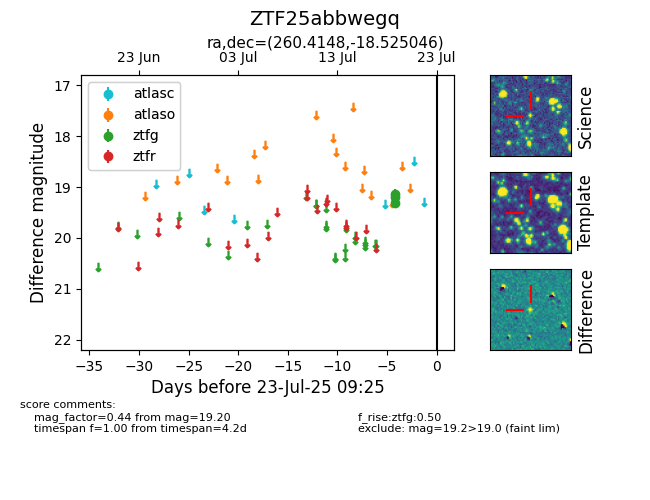

Target ZTF25abbwegq at 2025-07-23 11:52, see:
FINK: fink-portal.org/ZTF25abbwegq
Lasair: lasair-ztf.lsst.ac.uk/objects/ZTF25abbwegq
ALeRCE: alerce.online/object/ZTF25abbwegq
alt names
ZTF25abbwegq (ztf,fink)
coordinates:
equatorial (ra, dec) = (260.4148,-18.52505)
galactic (l, b) = (5.8640,+10.21301)
photometry
last ztfg=19.20
3 ztfg detections
